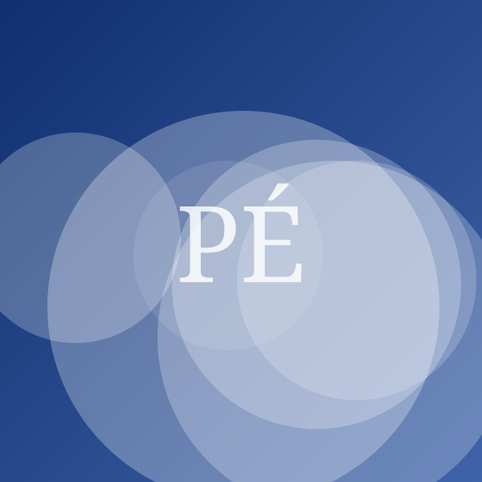

Les meilleurs casques audio pour enfants
Publié en avril 2026Mis à jour en juillet 2026 3 min de lecture Par Thomas Ferrand, Journaliste famille & enfants
Un casque pour enfant se choisit d'abord sur un critère : la limitation du volume est-elle matérielle, donc incontournable, ou logicielle, donc contournable en trois manipulations ? Nous avons vérifié modèle par modèle.
Certains liens de cet article sont des liens d'affiliation : nous pouvons percevoir une commission, sans surcoût pour vous.
L'exposition sonore des enfants est un sujet sérieux : les dommages auditifs sont cumulatifs et irréversibles. Les casques « enfants » affichent tous une limitation à 85 décibels, mais tous ne se valent pas — chez plusieurs modèles, la limite se contourne en désactivant une option dans les réglages du téléphone.
Ce que nous avons vérifié
Pour chaque modèle, nous avons mesuré le niveau sonore réel au casque avec une source réglée à 100 % de volume, puis tenté de contourner la limitation par les réglages système de l'appareil source. Nous avons ensuite fait porter les casques par des enfants de 6 à 11 ans pendant plusieurs semaines, et vérifié la solidité de l'arceau après manipulation répétée.
| Modèle | Prix indicatif | Note | Limite sonore | Poids | Sans fil | Coussinets | Garantie | Voir |
|---|---|---|---|---|---|---|---|---|
| Notre choixKidSound 1Auria | 49 € | 4,3/5 | 85 dB (matérielle) | 168 g | Non | Remplaçables | 2 ans | Voir (lien affilié, nouvelle fenêtre) |
| Le meilleur sans filKidSound AirAuria | 79 € | 4,1/5 | 85 dB (matérielle) | 215 g | Bluetooth | Remplaçables | 2 ans | Voir (lien affilié, nouvelle fenêtre) |
| Le petit prixPetit ÉcouteurNedra | 24 € | 3,2/5 | 85 dB (logicielle) | 140 g | Non | Non remplaçables | 2 ans | Voir (lien affilié, nouvelle fenêtre) |
| Pour les 10 ans et plusStudio JuniorAuria | 65 € | 4,0/5 | 85 ou 94 dB | 230 g | Non | Remplaçables | 3 ans | Voir (lien affilié, nouvelle fenêtre) |
Notre choix : Auria KidSound 1
Notre choix
KidSound 1
Auria · Casque audio enfant
4,3/5
49 € Prix relevé le 28 juillet 2026
Voir le prix chez Marchand B (lien affilié, nouvelle fenêtre)Points forts
- Limitation matérielle à 85 dB, non contournable
- Arceau solide après 6 mois d'usage
- Coussinets remplaçables
Points faibles
- Câble non détachable
- Pas de pliage à plat
La limitation est intégrée au circuit du casque : quel que soit le réglage de la tablette, le niveau relevé n'a jamais dépassé 85 dB dans nos mesures. L'arceau a supporté six mois de manipulation sans jeu ni craquement, et les coussinets — la pièce qui s'use en premier — se remplacent pour quelques euros.
À éviter : la limitation logicielle

Le petit prix
Petit Écouteur
Nedra · Casque audio enfant
3,2/5
24 € Prix relevé le 28 juillet 2026
Voir le prix chez Marchand B (lien affilié, nouvelle fenêtre)Points forts
- Moins de 25 €
- Très léger (140 g)
Points faibles
- Limitation sonore logicielle, contournable
- Plastique de l'arceau fragile
- Aucune pièce détachée
Ce modèle illustre le problème : la limitation dépend d'un réglage de l'appareil source, que l'enfant peut désactiver seul. À 24 €, la tentation est réelle, mais le casque ne remplit pas la fonction pour laquelle il est vendu.
Les repères d'écoute à transmettre
- La règle des 60/60 : pas plus de 60 % du volume maximum, pas plus de 60 minutes d'affilée, puis une pause.
- Le test de la conversation : si vous devez élever la voix pour vous faire entendre d'un enfant qui porte un casque, le volume est trop fort.
- Préférer le casque aux écouteurs intra-auriculaires avant l'adolescence : la distance au tympan compte, et le maintien est meilleur.
- Écouter dans le calme. Dans le bruit — voiture, train —, l'enfant monte le volume pour couvrir l'ambiance. Un casque à réduction de bruit passive bien conçu évite ce réflexe.
Les repères de prévention sur le bruit et l'audition sont publiés par Santé publique France et par le ministère de la Santé.
Questions fréquentes
À partir de quel âge un enfant peut-il porter un casque ?
La plupart des fabricants indiquent 3 ans, mais l'usage régulier n'a guère de sens avant 5 ou 6 ans. Avant cet âge, privilégiez l'écoute sur haut-parleur, à volume modéré.
La limitation à 85 dB suffit-elle ?
C'est un plafond, pas une garantie. L'exposition dépend aussi de la durée : plusieurs heures quotidiennes à 85 dB restent excessives. La durée compte autant que le niveau.
Faut-il un casque à réduction de bruit active ?
Ce n'est pas indispensable, et cela alourdit le casque. Une bonne isolation passive suffit pour éviter que l'enfant monte le volume dans les transports.
Complément d'informations
- Thématiques
- AuditionÉcrans et enfantsAudio
- Mots-clés
- casque enfantlimitation sonore85 dBauditioncomparatif
- Localisation du sujet
- France
- Expertise de l'auteur
- Puériculture, sécurité des produits
Thomas Ferrand
Journaliste famille & enfants · Puériculture, Sécurité des produits, Jouets
Thomas suit la sécurité des produits destinés aux enfants et les rappels de produits.